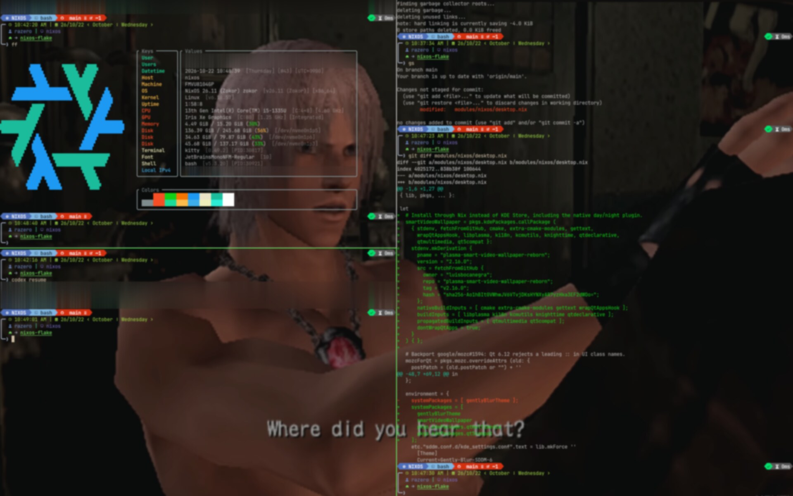
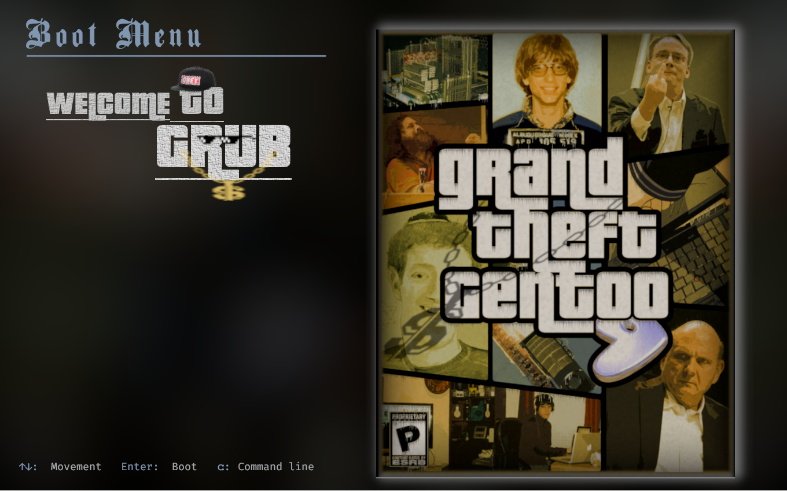
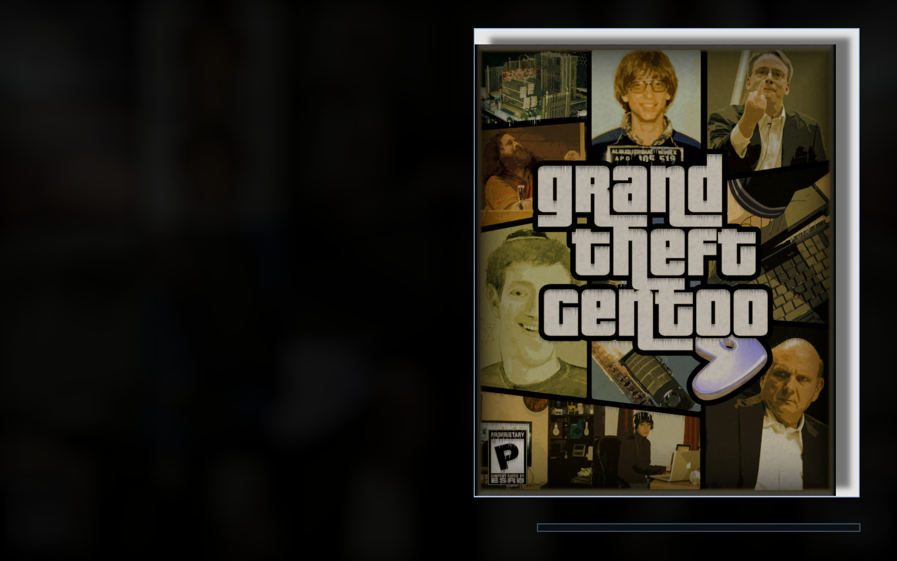
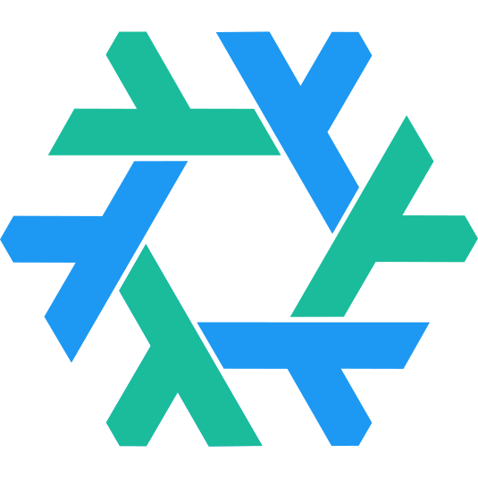
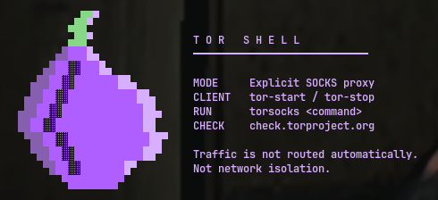

Kitty
28% opacity. Split horizontally or vertically without losing the view. Jump between panes with Alt + H / J / K / L.
Game worlds. Glass terminals.
A Gentoo-inspired boot sequence.
The desktop I use every day,
and the flake that makes it mine.

Four stages. One scene.
A Grand Theft Gentoo boot sequence.
Play it through, or pick a chapter.

SELECT YOUR SYSTEM

Grand Theft Gentoo artwork, BankGothic type, and a cool-blue selection. A small GRUB patch keeps the selected menu visible until the kernel takes over. Menu entries here are examples.
A terminal, not a dashboard.
The tools I live in, the files behind them.
Select a filename to look inside.
| Keys | Values |
|---|---|
| User | razero [/home/nix/] |
| Users | razero@localhost [Local session] |
| Datetime | 2026-10-13 15:45:14 [Tuesday] [UTC+0900] |
| Host | nixos |
| Machine | FMVU8104GP |
| OS | NixOS 26.11 (Zokor) [x86_64] |
| Kernel | Linux [v6.18.55] |
| Uptime | 0:16:03 |
| CPU | 13th Gen Intel® Core™ i5-1335U [4.60 GHz] |
| GPU | Iris Xe Graphics [Integrated] |
| Memory | 3.07 GiB / 15.20 GiB (20%) |
| Disk | 102.46 GiB / 245.68 GiB (42%) |
| Terminal | kitty [0.49.2] |
| Font | JetBrainsMono Nerd Font [10] |
| Shell | bash [v5.3.15] |
| Network | Wi-Fi [Connected] |
{ pkgs, ... }:{ programs.neovim = { enable = true; defaultEditor = true; viAlias = true; vimAlias = true; plugins = with pkgs.vimPlugins; [ monokai-pro-nvim mini-nvim ]; };}A palette and prompt study. Abstract background, static sample values.
28% opacity. Split horizontally or vertically without losing the view. Jump between panes with Alt + H / J / K / L.
Branch and exit status in the prompt. Machine details in a color-coded fastfetch table. Everything where I expect it.
mini.nvim and Treesitter. Plugins and parsers pinned by Nix; colors and keybindings tuned in Lua.
A little privacy, with a lot of personality. A shared Nix shell, an explicit proxy, and an onion that makes an entrance.

Start the client, enter the shell, and choose which commands go through Tor. No magic switch. No false promises.
tor-startStart the clienttor-shellEnter the shelltorsocks curl …Route a commandOrdinary commands are not proxied automatically. The shell does not block direct connections or isolate networking.
SDDM, the Plasma lock screen and KSplash draw the same animated background, blur and clock. Native authentication and session controls stay intact.
Panel and dialog SVG fills at 60% opacity, plus a warm selection accent in Kickoff. The stock layout and behavior remain.
A six-band EasyEffects preset for the internal speaker: gentle low-end cuts, a little presence, and a peak-catching compressor.
Less boot noise. Hold Plymouth's final frame and hand off cleanly to SDDM.
PipeWire and WirePlumber rules to prefer the working internal microphone.
Docker, libvirt, and QEMU with TPM support. Test environments live in the same flake.